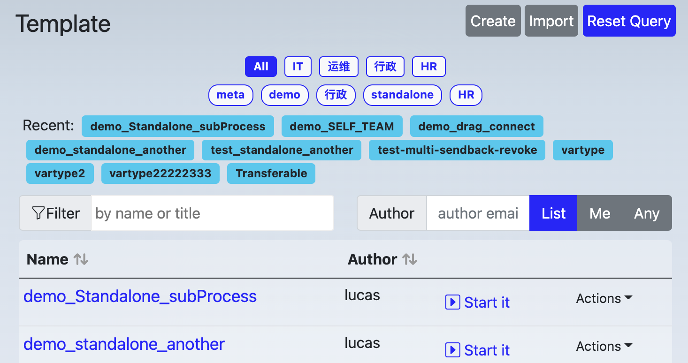
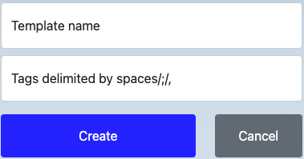
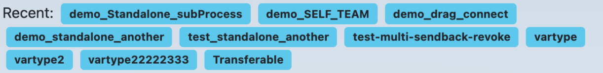
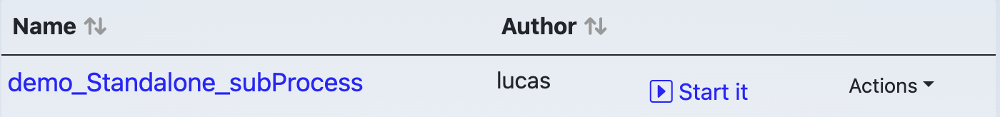
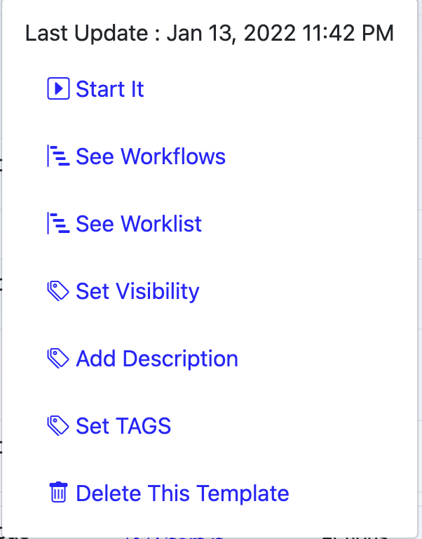

Template Explorer
MetatoCome Workflow Template explorer shows all templates your template library, as well as allowing management of workflow templates.
User Interface

Top buttons
There are three buttons on the top-right corner of template explorer.
- Create: show create template form
- Import : import a template from your local disk
- Reset Query: clear out any specified query criteria
Create a template

Above: Create template form
Give your new template an unique name, one more more tags separated by spaces, semicolons, or commas.
Import a template
If you have ever exported a template to your local disk, or received a exported template file from others, you may import it to your template library
Reset Query
Template explorer provides detailed criteria for searching, Reset Query is used to reset query critera by one-click
Tags Area
Tags are used to categorize templates, organizaiton level tags are defined by administrators and available for everyone in your organizaiton, while personal tags are available individually.
- organizaitonal tags are displayed in a round corner rectangle, like

- personal tags are displayed in a pill, like

Click a tag, explorer will search those templates with the tag and display them in the result table at the lower part of explorer.
A template can have more than one tags, hold shift key while clicking a tag will make tag multi-selection. thus, MetatoCome will search for those templates which has all the highlighted tags.
Recent Templates Area
List out recent viewed/started templates for quick accessing. 
Extra Filter Area
Filter results with template name or author, use "Me" and "Any" to quickly toggle author of yourself and others
Result Table
List out any templates meet above requirements: tag, name filter, author etc.

- The first column is the link to template designer
- The second column is the author
- The third column is shortcut to start it
- The fourth column is a popup menu contains more actions available for the current template

Those actions are:
- Start it: start this workflow
- See Workflows: list out workflow processes of this template
- See Worklist: list out work items belong to this template
- Set Visibility: Set the visibility of this template, see details below.
- Add Description: show description form to add or modify template description.
- Set TAGS: show tag editting form to add, modify or delete tags of this template
- Delete This Template: as it says
Set Visibility
Only the author and the people who are the member of the resolved group of visibility setting will be able to see this template and use it.
If a user previous was in the visibility group and was removed from this group later, he/she will immediately dismiss the right to use this template, he/she will not see tasks related to this template as well immediately as well.
Pagination
Use pagination to browser more results